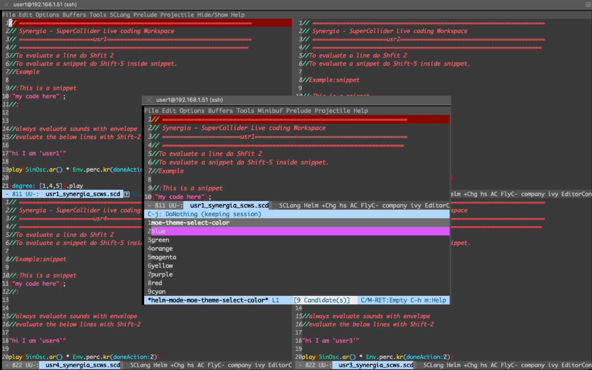
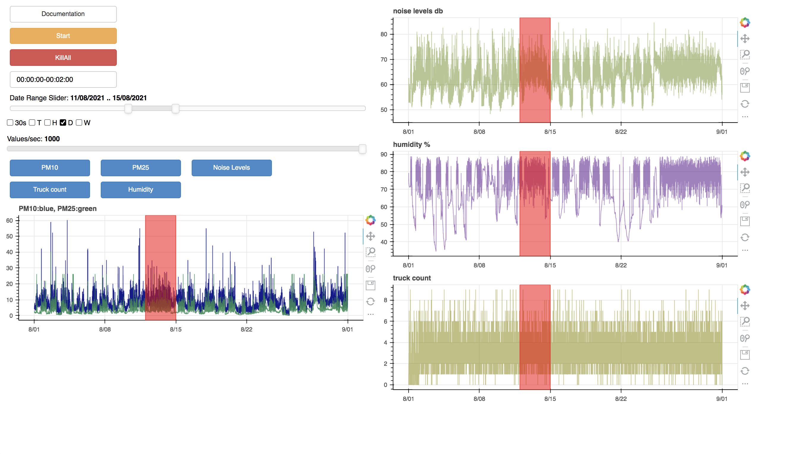

I´ve been keeping my self occupied with involvement in various projects. Some examples below. I will add some descriptions later when I find time.
Synerg(e)ia - Networked Remote Live Coding
Synerg(e)ia - Networked Remote Live Coding
- Synerg(e)ia (Συνέργεια) is an experimental project for Networked Collaborative live coding
- Synergia is a Raspberry pi SSH and OscGroups server located in Greece
- Synergia based on tmux collaborative editing, Emacs server/clients and SuperCollider
- Synergeia was developed together with Vasilis Agiomyrgianakis.
Construction site data sonification and visualisation
The Augmented Floor - Assessing Auditory Augmentation. Katharina Groß-Vogt, Iason Svoronos Kanavas & Marian Weger
The Augmented Floor - Assessing Auditory Augmentation. Katharina Groß-Vogt, Iason Svoronos Kanavas & Marian Weger. Audio Mostly Conference 2022. Github repository.
An exploratory use of audiovisual displays on oceanographic data
Contribution to: Schrödinger’s box

Installation - contribution to the project: Schrödinger’s box. Marian Weger, Iason Svoronos-Kanavas & Robert Höldrich. Audio Mostly Conference 2022.
Original Marian Weger´s Github repo. Find more info about the project on Marian´s page here.